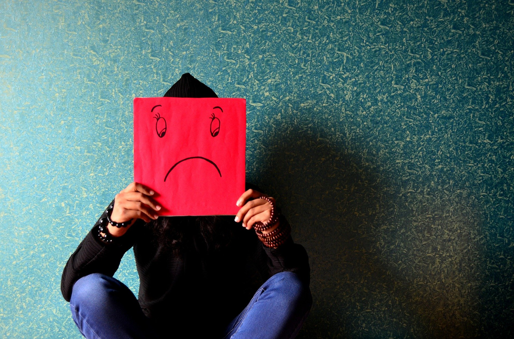

LA DEPRESION EN LOS ADOLESCENTES
La depresion, como sabras, es un trastorno mental. Ademas, puede darse
ella sola o junto a otros trastornos como, por ejemplo, la ansiedad o el
Trastorno Obsesivo Compulsivo (TOC).
Como puede llegar a ser grave y creemos que es uno de los trastornos
mentales mas comunes, en la guia de hoy vamos a hablar sobre el.

La depresion en adolescentes es un problema de salud mental
grave que provoca un sentimiento de tristeza constante y una perdida de interes
en realizar diferentes actividades. Afecta la manera en que tu hijo adolescente
piensa, se siente y se comporta, y puede provocar problemas emocionales,
funcionales y fisicos. Aunque la depresion puede ocurrir en cualquier momento
de la vida, los sintomas entre los adolescentes y los adultos pueden ser
diferentes.
Algunos problemas como la presion de sus compañeros, las
expectativas academicas y los cuerpos que cambian pueden ocasionar muchos
altibajos en los adolescentes. Sin embargo, para algunos adolescentes, estar
deprimido es mucho mas que solo sentimientos temporales, sino que es un sintoma
de depresion.
La depresion en adolescentes no es una debilidad o algo que se
pueda superar con fuerza de voluntad, puede tener consecuencias graves y
requiere tratamientos a largo plazo. Para la mayoria de los adolescentes, los
sintomas de depresion se calman con tratamientos como medicamentos y terapia
psicologica.